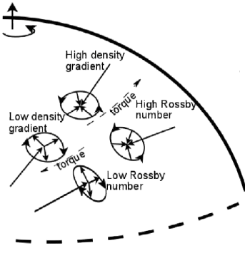
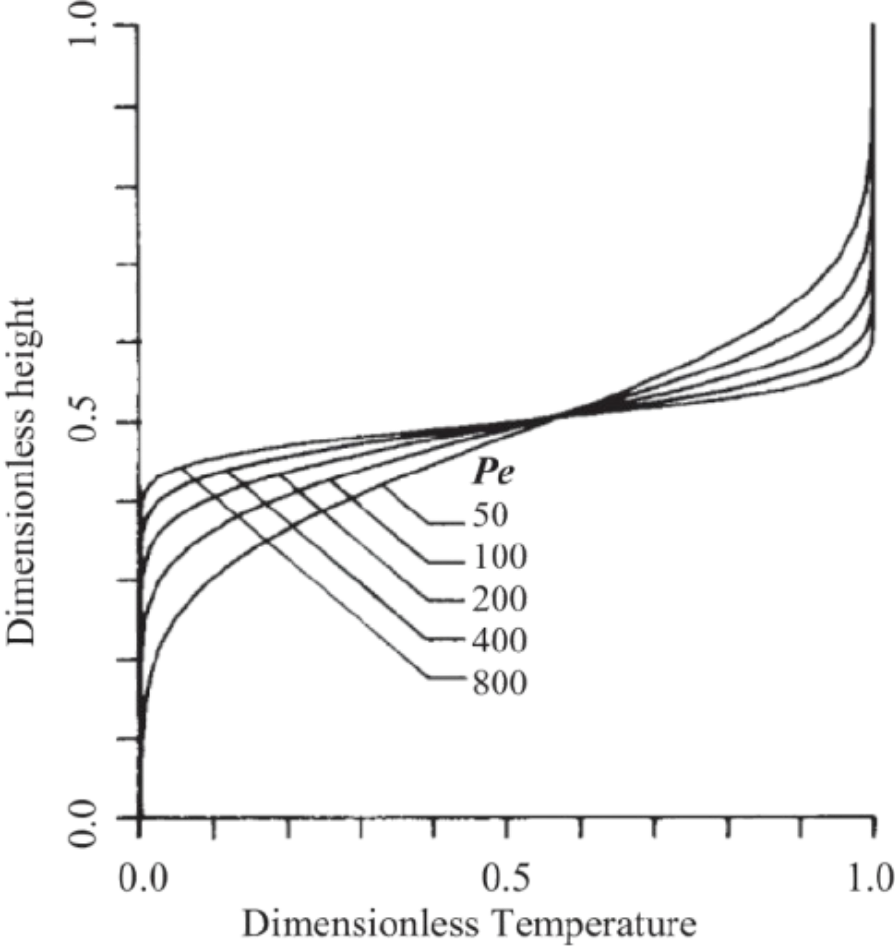

$$
\begin{aligned}
&\text{Rossby number} = \frac{U}{fL} \\
&=
\begin{cases}
\ll 1 & \text{Coriolis force dominates} \\
\sim 1 & \text{Advection and Coriolis are comparable} \\
\gg 1 & \text{Advection dominates; rotation negligible}
\end{cases}
\end{aligned}
$$

$$
\begin{aligned}
&\text{Péclet number} = \frac{UL}{k} \\
&=
\begin{cases}
\ll 1 & \text{Diffusion dominates (slow, smoothed transport)} \\
\sim 1 & \text{Advection and diffusion are both important} \\
\gg 1 & \text{Advection dominates (sharp gradients persist)}
\end{cases}
\end{aligned}
$$
\(
\begin{aligned}
\mathcal{O}\left( \frac{u \, \frac{\partial DIC}{\partial x}}{k \, \frac{\partial^2 DIC}{\partial x^2}} \right)
&= \mathcal{O}\left( \frac{u}{k} \cdot \frac{\frac{\partial DIC}{\partial x}}{\frac{\partial^2 DIC}{\partial x^2}} \right)
\approx \mathcal{O}\left( \frac{u}{k} \cdot \frac{\Delta DIC / \Delta x}{\Delta DIC / \Delta x^2} \right)
= \mathcal{O}\left( \frac{u}{k} \cdot \frac{\Delta DIC / \Delta x}{\Delta DIC / (\Delta x)^2} \right)
= \mathcal{O}\left( \frac{u}{k} \cdot \frac{(\Delta x)^2}{\Delta x} \right) \\[8pt]
= \mathcal{O}\left( \frac{u \cdot \Delta x}{k} \right)
&\approx \mathcal{O}\left( \frac{U \cdot L}{k} \right)
= \mathcal{O}\left( \frac{UL}{k} \right)
\end{aligned}
\)
with \( U = 1 \times 10^{-4} \, \text{m/s}, \quad L = 1 \times 10^6 \, \text{m}, \quad k = 1 \times 10^2 \, \text{m}^2/\text{s} \Rightarrow \text{Pe} \approx 1 \)